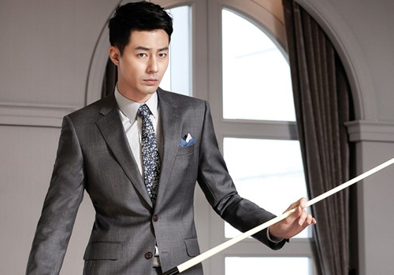
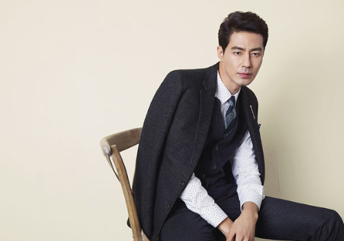

-  지난해 열린 MBC 연기대상 주말극 부문에서 남자 우수연기상을 수상한 장승조는 수상 소감을 통해 "사랑하는 아내, 자기야,
-  장승조는 최근 '훈장 오순남'에 이어 '돈꽃'으로 폭발적인 시청자들의 사랑을 받으며 '대세 배우'로 자리매김했다. 지난해 열린 MBC 연기대상 주말극 부문에서 남자 우수연기상을 수상한 장승조는 수상 소감을 통해 "사랑하는 아내, 자기야, 나 상받았다"라고 아내 린아에 대한 사랑을 전하기도 했다. 린아는 천상지희 멤버
 장승조는 최근 '훈장 오순남'에 이어 '돈꽃'으로 폭발적인
시청자들의 사랑을 받으며 '대세 배우'로 자리매김했다.
지난해 열린 MBC 연기대상 주말극 부문에서 남자 우수연기상을
수상한 장승조는 수상 소감을 통해 "사랑하는 아내, 자기야,
나 상받았다"라고 아내 린아에 대한 사랑을 전하기도 했다.
린아는 천상지희 멤버
장승조는 최근 '훈장 오순남'에 이어 '돈꽃'으로 폭발적인
시청자들의 사랑을 받으며 '대세 배우'로 자리매김했다.
지난해 열린 MBC 연기대상 주말극 부문에서 남자 우수연기상을
수상한 장승조는 수상 소감을 통해 "사랑하는 아내, 자기야,
나 상받았다"라고 아내 린아에 대한 사랑을 전하기도 했다.
린아는 천상지희 멤버
- 장승조는 최근 '훈장 오순남'에 이어 '돈꽃'으로 폭발적인 시청자들의 사랑을 받으며 '대세 배우'로 자리매김했다. 지난해 열린 MBC 연기대상 주말극 부문에서 남자 우수연기상을 수상한 장승조는 수상 소감을 통해 "사랑하는 아내, 자기야, 나 상받았다"라고 아내 린아에 대한 사랑을 전하기도 했다. 린아는 천상지희 멤버